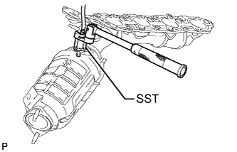

AIR FUEL RATIO SENSOR > REMOVAL |
| 1. REMOVE EXHAUST MANIFOLD ASSEMBLY |
Remove the exhaust manifold (Click here).
| 2. REMOVE AIR FUEL RATIO SENSOR (for Bank 1 Sensor 1) |
|  |
Using SST, remove the air fuel ratio sensor from the exhaust manifold LH.
| 3. REMOVE AIR FUEL RATIO SENSOR (for Bank 2 Sensor 1) |
 |
Using SST, remove the air fuel ratio sensor from the exhaust manifold RH.